●ウィンドウのリサイズ
- Tk はウィンドウのサイズに合わせてウィジェットの大きさを変更することができる
- ジオメトリマネージャーに用意されているオプションを設定するだけ
- Packer のリサイズ
- expand = boolean
ウィンドウに余白が生じたとき、boolean が真であれば余白をウィジェットに割り当てる - 余白をウィジェットに割り当てただけでは、ウィジェットは大きくならない
- ウィジェットを引き伸ばすため fill オプションを設定すること
- 簡単な使用例
リスト : Packer のリサイズ from Tkinter import * root = Tk() Button(root, text = 'button 0').pack(expand = True, fill = BOTH) Button(root, text = 'button 1').pack(expand = True, fill = BOTH) root.mainloop()
- Packer はウィンドウが小さくなるとウィジェットを圧縮する
- 本当にスペースが無くなるとウィジェットは表示されなくなる
- このとき、配置された逆順でウィジェットが削除される
- 最初に配置されたウィジェットが最後まで残る
- 大切なウィジェットは最初に配置した方がよいだろう
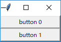 Packer によるボタンの配置
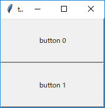 ウィンドウを拡大する
- Gridder のリサイズ
- マスの状態を設定するメソッド grid_columnconfigure() と grid_rowconfigure() で行う
window.grid_columnconfigure(column_index, options) window.grid_rowconfigure(row_index, options)
| minsize | 最小の幅/高さを数値で指定する |
| weight | 余白を配分するときの割合を数値で指定する |
| pad | 詰め物を数値で指定する |
- リサイズに対応するには、オプション weight に 1 以上の整数値を指定する
- 簡単な使用例
リスト : Gridder のリサイズ
from Tkinter import *
root = Tk()
column_data = (0, 0, 1, 1)
row_data = (0, 1, 0, 1)
for x in range(4):
b = Button(root, text = 'button %d' % x)
b.grid(column = column_data[x], row = row_data[x], sticky = 'nsew')
root.mainloop()
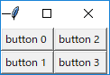 Gridder によるボタンの配置
- grid_columnconfigure() は縦方向に配置されたマスのオプションを設定する
root.grid_columnconfigure(0, weight = 1)
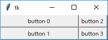 button 0, 1 は横方向に伸びる
- 1 列目は weight オプションを設定していないので、余白は割り当てられない
- 次のように 1 列目にも weigth を設定する
root.grid_columnconfigure(1, weight = 2)
 4 つのボタンが横方向に伸びる
4 つのボタンが横方向に伸びる
- weight オプションの設定が 2 なので 0 列の 2 倍の余白が割り当てられる
- つまり、ボタン button 2 と button 3 の方が大きく伸びる
- ウィジェットを縦方向に伸ばすには grid_rowconfigure() を使う
root.grid_rowconfigure(0, weight = 1) root.grid_rowconfigure(1, weight = 2)
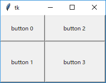 4 つのボタンが縦横方向に伸びる
- ウィンドウを大きくするとボタン button 3 がいちばん大きくなる
- キャンバスウィジェットのリサイズ
- キャンバスもウィジェットなので、pack() や grid() のオプションを指定することで、ウィンドウのリサイズに対応することができる
リスト : キャンバスウィジェットのリサイズ (1) import tkinter as tk root = tk.Tk() c0 = tk.Canvas(root, bg = 'green', width = 200, height = 200) c0.create_rectangle(20, 20, 180, 180, fill = 'red') c0.pack(fill = tk.BOTH, expand = True) root.mainloop()
- キャンバスウィジェットの背景は green で、その上には赤い四角形が描かれている
- ウィンドウの大きさを変えると、キャンバスウィジェットの大きさは変わりますが、図形の大きさは変わらない
- Packer はキャンバスウィジェットを引き伸ばすことはできても、その中の図形を操作することはできない
- ウィンドウのリサイズに対応するには、ユーザー側で図形を再描画する処理をプログラムする必要がある
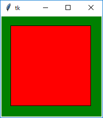 キャンバスウィジェットを配置
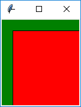 ウィンドウを縮小
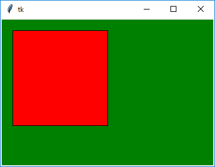 ウィンドウを拡大
- 図形の再描画
- 図形を再描画するには、ウィンドウがリサイズされたときに発生するイベント Configure を使う
- このイベントをバインドして、ウィンドウの大きさが変わったら図形を再描画する
- バインドはメインウィンドウに対して設定する
root.bind('<Configure>', change_size)
- 簡単な使用例
リスト : キャンバスウィジェットのリサイズ (2)
import tkinter as tk
# メインウィンドウの設定
root = tk.Tk()
root.minsize(100, 100)
root.maxsize(400, 400)
# キャンバスの設定
c0 = tk.Canvas(root, bg = 'darkgreen', width = 200, height = 200)
id = c0.create_rectangle(20, 20, 180, 180, fill = 'red')
c0.pack(fill = tk.BOTH, expand = True)
# 図形の大きさを変更
def change_size(event):
w = c0.winfo_width()
h = c0.winfo_height()
c0.coords(id, 20, 20, w - 20, h - 20)
# バインディングの設定
root.bind('<Configure>', change_size)
root.mainloop()
- 図形の大きさは関数 change_size() で行う
- winfo_width() と winfo_height() でキャンバスの大きさを求め、メソッド coords() で図形の位置を変更するだけ
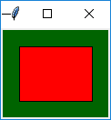 ウィンドウを縮小
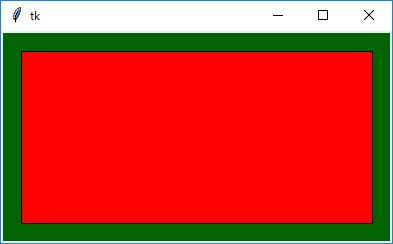 ウィンドウを拡大
●フレーム
- フレーム (Frame) ウィジェットは、複数のウィジェットをひとまとめにする入れ物
- 単純なウィジェットだが、ジオメトリマネージャと組み合わせることで、複雑なウィジェットの配置にも簡単に対応することができる
- フレームウィジェットは Frame() で生成する
- 形状は relief オプションで指定する
- flat (平坦)、raised (出っぱり)、sunken (引っ込み)、groove (溝)、ridge (土手) の 5 種類がある
- デフォルトは flat
- 簡単な使用例
リスト : フレームの表示
import tkinter as tk
root = tk.Tk()
for r in ('raised', 'sunken', 'flat', 'groove', 'ridge'):
f = tk.Frame(root, width = 60, height = 40,
relief = r, borderwidth = 4, bg = 'lightgray')
f.pack(padx = 5, pady = 5, side= 'left')
root.mainloop()
- borderwidth は枠の幅を指定する
- 形状が raised の場合、borderwidth の値を増やすと、フレームはより出っ張って見えるようになる
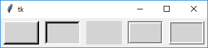 フレームの形状
- フレームにウィジェットを配置する方法はいままでと同じ
- もうひとつ、ジオメトリマネージャのオプション in (in_) を使う方法がある
- in は Python のキーワードなので Tkinter では in_ を使う
- 簡単な例題として、ボタンを 3 つ横に並べて、その下にボタンを縦に 3 つ配置するプログラムを示す
リスト : フレームにボタンを配置する import tkinter as tk root = tk.Tk() # フレームの生成 f0 = tk.Frame(root) f1 = tk.Frame(root) # f0 にボタンを配置する tk.Button(f0, text = 'button 00').pack(side = tk.LEFT) tk.Button(f0, text = 'button 01').pack(side = tk.LEFT) tk.Button(f0, text = 'button 02').pack(side = tk.LEFT) # f1 にボタンを配置する tk.Button(root, text = 'button 10').pack(in_ = f1, fill = tk.BOTH) tk.Button(root, text = 'button 11').pack(in_ = f1, fill = tk.BOTH) tk.Button(root, text = 'button 12').pack(in_ = f1, fill = tk.BOTH) # フレームの配置 f0.pack() f1.pack(fill = tk.BOTH) root.mainloop()
- フレーム f0 には今までと同じ方法でボタンを配置する
- このボタンを pack するとフレーム f0 に配置される
- この段階ではフレームにボタンを詰め込んだだけなので、まだウィンドウには表示されない
- フレーム f1 には、in_ オプションを使ってボタンを配置する
- この場合、ボタンはメインウィンドウ root から生成する
- pack の in_ オプションによりフレーム f1 に配置される
- なお、in_ オプションは grid() でも使用することができる
- 最後にフレーム f0 と f1 を pack() で配置する
- これでボタンが表示される
- それから、縦に配置したボタンを引き伸ばすため、fill オプションを指定する
- この場合、ボタンをフレームに配置するときと、フレームをウィンドウに配置するときの 2 か所で指定する必要がある
- 片方だけではボタンを引き伸ばすことはできない
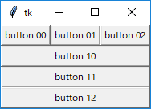 フレームを使ってボタンを配置する
- 重なり順の変更
- ウィジェットには上下の順番があり、Tk の場合はあとから作成したウィジェットが上になる
- ウィジェットの重なり順を変更することで、ウィジェットをフレームの下に隠すことができる
- ウィジェットの重なり順はメソッド lower() と raise() で変更する
widget.raise(widget1) widget.lower(widget1)
- 簡単な使用例
リスト : フレームの下にボタンを隠す
import tkinter as tk
root = tk.Tk()
buttons = []
# ボタンを隠す
def hide(n):
return lambda : buttons[n].lower()
# フレーム
f = tk.Frame(root)
# ボタン
a = tk.Button(root, text = 'Show', command = lambda : f.lower())
a.pack(in_ = f, fill = tk.X)
for x in range(4):
b = tk.Button(text = 'button {}'.format(x), command = hide(x))
b.pack(in_ = f, fill = tk.X)
buttons.append(b)
f.pack(fill = tk.X)
root.mainloop()
- 5 つのボタンをフレームに配置する
- これらのボタンは pack() の in_ オプションで配置することに注意
- ボタンをフレームから生成すると、フレームとボタンの重なり順を変更できなくなる
- button 0 - 3 を押すと、そのボタンがフレームの下に隠れる
- ボタンを隠す処理は関数 hide() で生成した関数で行う
- ボタンウィジェットのオブジェクトはリスト buttons に格納されている
- 押したのボタンの重なり順を lower() でいちばん下にすれば、フレームの下に隠すことができる
- いちばん上のボタン Show を押すと、隠れたボタンを表に出す
- この場合、フレームウィジェットの重なり順をいちばん下に変更した方が簡単
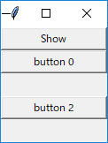 button 1 と 3 を押した状態
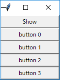 Show を押した状態
●ラベルフレーム
- ラベルフレームウィジェットはフレームウィジェットとラベルウィジェットを合わせたもの
- 見た目は枠付きのフレームで、枠の上に見出しラベルが表示される
- ラベルフレームウィジェットは LabelFrame() で生成する
- 主なオプションを以下に示す
- text, 見出しラベルに表示されるテキストを指定する
- relief, 形状 (flat, raised, sunken, groove, ridge) を指定する
- labelanchor, 見出しラベルの位置 (nw, n, ne, e, se, s, sw, w) を指定する
- labelwidget, 見出しラベルのかわりにウィジェットを指定する
- labelanchor のデフォルトは nw (左上)
- relief のデフォルトは groove
- 簡単な使用例 (1)
リスト : ラベルフレーム (1)
import tkinter as tk
root = tk.Tk()
for r in (tk.NW, tk.N, tk.NE, tk.SW, tk.S, tk.SE):
f = tk.LabelFrame(root, text = 'label',
width = 80, height = 60, labelanchor = r)
f.pack(padx = 5, pady = 5, side = tk.LEFT)
root.mainloop()
- lableanchor を nw, n, ne, sw, s, se に変えてラベルフレームを表示する
- pack() のオプション padx と pady は、ウィジェットの周囲に設定する余白の長さを指定する
- これが大きいとウィジェットの間隔が開くことになる
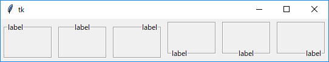 ラベルフレーム(1)
- 簡単な使用例 (2)
リスト : ラベルフレーム (2)
import tkinter as tk
root = tk.Tk()
for r in ('raised', 'sunken', 'flat', 'groove', 'ridge'):
f = tk.LabelFrame(root, text = r, width = 80, height = 60, relief = r)
f.pack(padx = 5, pady = 5, side= tk.LEFT)
root.mainloop()
- 枠の幅はフレームウィジェットと同様にオプション borderwidth で変更する
- borderwidth の値を増やすと、フレームはより出っ張って見えるようになる
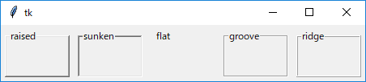 ラベルフレーム(2)
- ラベルフレームにウィジェットを配置する
リスト : ラベルフレーム (3)
import tkinter as tk
root = tk.Tk()
v = tk.IntVar()
v.set(0)
f0 = tk.LabelFrame(root, text = 'Group1')
f1 = tk.LabelFrame(root, text = 'Group2')
for x in (0, 1, 2):
tk.Radiobutton(f0, text = 'radiobutton {}'.format(x), value = x, variable = v).pack()
tk.Checkbutton(f1, text = 'checkbutton {}'.format(x)).pack()
f0.pack(padx = 5, pady = 5, side = tk.LEFT)
f1.pack(padx = 5, pady = 5, side = tk.LEFT)
root.mainloop()
- ラベルフレーム f0 にはラジオボタンを 3 個、f1 にはチェックボタンを 3 個配置する
- ウィジェットの配置方法はフレームウィジェットと同じ
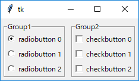 ラベルフレーム(3)
- labelwidget オプションの使用例
リスト : ラベルフレーム (4)
import tkinter as tk
root = tk.Tk()
root.option_add('*font', ('', 14))
# 値を格納するオブジェクト
flag = tk.BooleanVar()
flag.set(False)
v = tk.IntVar()
v.set(0)
# ラジオボタンを格納
buttons = []
# ボタンの状態を変更
def change_state():
if flag.get():
new_state = 'normal'
else:
new_state = 'disabled'
for b in buttons:
b.configure(state = new_state)
# チェックボタン
cb = tk.Checkbutton(root, text = 'use button', variable = flag, command = change_state)
# ラベルフレーム
f = tk.LabelFrame(root, labelwidget = cb)
# ラジオボタン
for x in (0, 1, 2):
b = tk.Radiobutton(f, text = 'radiobutton {}'.format(x),
value = x, variable = v, state = 'disabled')
b.pack()
buttons.append(b)
# フレームの配置
f.pack(padx = 5, pady = 5)
root.mainloop()
- 見出しラベルの部分をチェックボタンにして、ラジオボタンの状態を制御する
- ラジオボタンを使用するときはチェックボタンをオンにする
- チェックボタンがオフのときはラジオボタンを使うことはできない
- 最初にチェックボタン cb を生成する
- Checkbutton() の第 1 引数はメインウィンドウを表すオブジェクト root にする
- そして、ラベルフレームを生成する LabelFrame() の labelwidget に cb を指定する
- cb は pack() で配置する必要はない
- ラベルフレーム f を pack() で配置するとき、ラベルフレームといっしょにチェックボタンも表示される
- チェックボタンの状態は flag に格納する
- flag の値は 0 に初期化しているので、チェックボタンはオフの状態する
- これに合わせて、ラジオボタンはすべて disabled の状態に初期化する
- ボタンの状態は関数 change_state() で変更する
- change_state() は flag の値によってラジオボタンの状態を変更する
- あとは、Checkbutton() の command に change_state() をセットするだけ
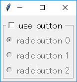 disabled 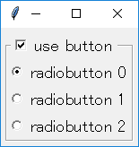 normal
●ペインドウィンドウ
- ペインドウィンドウ (panedwindow) は、一つのウィンドウを複数の領域に分割する場合に便利なウィジェット
- 分割した領域を pane (ペイン) といい、ペインとペインの間には sash (サッシュ、サッシ) と呼ばれる線が入る
- この線をマウスでドラッグすることで、ペインの大きさを変更することができる
- pane は「窓ガラス」、sash は「窓わく」という意味で、サッシの動作は窓の開閉によく似ている
- ペインドウィンドウは、ペイン・ウィンドウとかペイン式 (型) ウィンドウと呼ばれることもある
- ペインドウィンドウは、いろいろなアプリケーションでよく使われている形式
- 一つの画面を複数の領域に分割して内容を表示する方式を「タイリング」という
- これに対し、現在のウィンドウシステムは複数のウィンドウを重ねて表示する
- この方式を「オーバーラッピング」という
- 昔はタイリング方式を採用したシステム (たとえば Lisp マシンなど) もあったようだ
- ペインドウィンドウはアプリケーションの画面で「タイリング」を実現するウィジェットと考えることができる
- ペインドウインドウは PanedWindow() で生成する
- 主なオプションを以下に示す
- orient = 方向
ペインを配置する方向 (horizontal : 水平, vertical : 垂直) を指定する - sashwidth = 数値
サッシの幅を指定する - sashrelief = 形状
サッシの形状 (flat, raised, sunken, groove, ridge) を指定する - showhandle = boolean
真 : サッシにハンドルを付ける。偽 : サッシにハンドルを付けない。 - handlesize = 数値
ハンドルの大きさを指定する - orient のデフォルト値は horizontal で、ウィンドウは左右に分割され、サッシは縦線になる
- vertical を指定するとウィンドウは上下に分割され、サッシは横線になる
- サッシの形状は relief で指定し、デフォルトは ridge になる
- showhandle を真に設定すると、サッシに四角形のハンドルを付けることができる
- ハンドルの大きさは handlesize で指定する
- ウィジェットの配置
- ペインにウィジェットを配置するにはメソッド add() を使う
- n 個のウィジェットを配置すると、ウィンドウは n 分割される
- orient が horizontal の場合、ウィジェットは左側から順番に配置される
- vertical の場合は上から順番に配置される
- 簡単な使用例 (1)
リスト：ペインドウィンドウ (1)
import tkinter as tk
root = tk.Tk()
root.option_add('*font', ('', 14))
# ペインドウィンドウの生成
pw = tk.PanedWindow(root, sashwidth = 4)
pw.pack(expand = True, fill = tk.BOTH)
# ラベルの生成
a = tk.Label(pw, text = 'panedwindow\ntest1', bg = 'white')
b = tk.Label(pw, text = 'panedwindow\ntest2', bg = 'yellow')
# ペインドウィンドウに追加
pw.add(a)
pw.add(b)
root.mainloop()
- 最初に PanedWindow() でペインドウィンドウ pw を生成する
- オプション expand = True, fill = tk.BOTH を指定すると、ウィンドウのリサイズに対応することができる
- pw に配置するラベルを生成する
- ラベルは pw の子ウィジェットになるので、Label() の第 1 引数には pw を渡す
- 最後に、メソッド add() でラベルをペインドウィンドウに配置する
1. 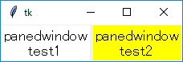 2. 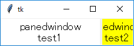 3. 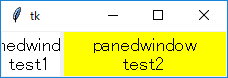
- 実行した直後の状態
- サッシを右へ移動した状態
- サッシを左へ移動した状態
- 簡単な使用例 (2)
リスト : ペインドウィンドウ (2)
import tkinter as tk
root = tk.Tk()
root.option_add('*font', ('', 14))
# ペインドウィンドウの生成
pw = tk.PanedWindow(root, orient = 'vertical', sashwidth = 4)
pw.pack(expand = True, fill = tk.BOTH)
# ラベルの生成
a = tk.Label(pw, text = 'panedwindow\ntest1', bg = 'white')
b = tk.Label(pw, text = 'panedwindow\ntest2', bg = 'yellow')
c = tk.Label(pw, text = 'panedwindow\ntest3', bg = 'cyan')
# ペインドウィンドウに配置
pw.add(a)
pw.add(b)
pw.add(c)
root.mainloop()
- ウィンドウを縦方向に分割する場合は orient に vertical を指定する
1. 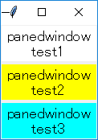 2. 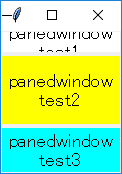 3. 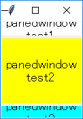
- 実行した直後の状態
- 上のサッシを上へ移動した状態
- 下のサッシを下へ移動した状態
- 簡単な使用例 (3)
リスト : ペインドウィンドウ (3)
import tkinter as tk
root = tk.Tk()
root.option_add('*font', ('', 14))
# グローバル変数
la = []
var = []
# ペインドウィンドウ
pw = tk.PanedWindow(root, orient = 'vertical', showhandle = True, sashwidth = 4)
pw.pack(expand = True, fill = tk.BOTH)
# フレーム
f = tk.Frame(pw)
pw.add(f)
# ラベルの表示切り替え
def change_label(n):
def _change():
if var[n].get():
pw.add(la[n])
else:
pw.forget(la[n])
return _change
# チェックボタン
for x in range(4):
v = tk.BooleanVar()
v.set(True)
var.append(v)
tk.Checkbutton(f, text = 'display label {}'.format(x),
variable = v, command = change_label(x)).pack()
# ラベル
for x, y in enumerate(('white', 'yellow', 'cyan', 'pink')):
a = tk.Label(pw, text = 'panedwindow\ntest{}'.format(x), bg = y)
la.append(a)
pw.add(a)
root.mainloop()
- ペインに配置できるウィジェットは一つだけ
- 複数のウィジェットを配置する場合はフレームウィジェットを使う
- チェックボタンはフレームにまとめてペインウィンドウに配置
- フレームはペインウィンドウの子ウィジェットになるので Frame(pw) とする
- あとはフレーム f にチェックボタンを配置する
- チェックボタンはリスト la に、チェックボタンの状態はリスト var に格納する
- リストの要素のオブジェクトは True に初期化しているので、最初はすべてオンの状態
- 関数 change_label() はチェックボタンの状態を調べる関数を返す
- オンのときはペインドウィンドウにラベルを配置し、オフのときはペインドウィンドウからラベルを削除する
- メソッド forget() を使うとペインウィンドウからウィジェットを削除することができる
- 削除したウィジェットはウィジェットコマンド add() で再度ペインウィンドウに配置することができる
- 最後に、ラベルを 4 つ作成して、フレームとラベルをペインウィンドウに配置する
1. 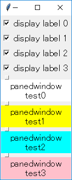 2. 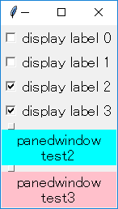 3. 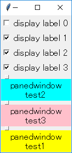
- 実行した直後の状態
- ラベル 0 と 1 を削除した状態
- 2 の後にラベル 1 を表示した状態
- add() はウィジェットを上から順番に追加していくだけ
- 削除したラベル 1 を add() で再度配置すると一番下に表示される
- 簡単な使用例 (4)
リスト：ペインドウィンドウ (4)
import tkinter as tk
root = tk.Tk()
root.option_add('*font', ('', 14))
# ペインドウィンドウ 1
pw1 = tk.PanedWindow(root)
pw1.pack(expand = True, fill = tk.BOTH)
# ラベル 1
a = tk.Label(pw1, text = 'panedwindow\ntest1', bg = 'yellow')
# ペインドウィンドウ 2
pw2 = tk.PanedWindow(pw1, orient = 'vertical')
# ラベル 2, 3
b = tk.Label(pw2, text = 'panedwindow\ntest2', bg = 'cyan')
c = tk.Label(pw2, text = 'panedwindow\ntest3', bg = 'pink')
# ペインドウィンドウに配置
pw1.add(a)
pw1.add(pw2)
pw2.add(b)
pw2.add(c)
root.mainloop()
- ペインドウィンドウの中にペインドウィンドウを配置することもできる
- 最初にペインドウィンドウ 1 を作る
- 左側のペインにはラベル 1 を配置し、右側のペインにはペインドウィンドウ 2 を配置する
- ここで、ペインドウィンドウ 2 の orient を vertical に設定する
- アプリケーションでよく見かける 3 ペイン型のウィンドウになる
1. 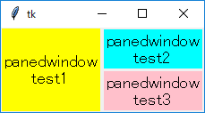 2. 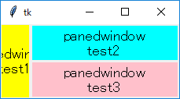 3. 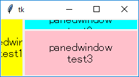
- 実行した直後の状態
- 縦線のサッシを左へ移動した状態
- 横線のサッシを上に移動した状態